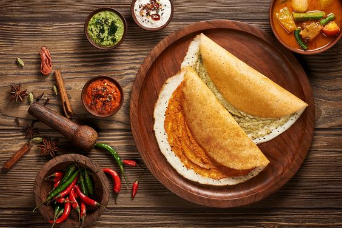
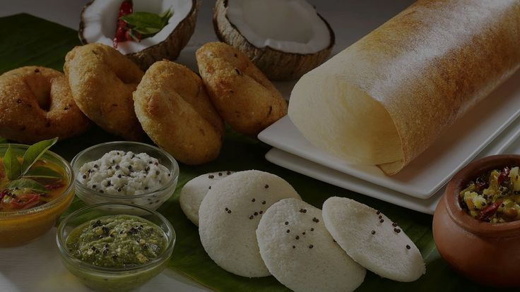

About Us
Welcome to Anna's Tiffin Center, where the flavors of South India come alive! Established 2024, we have been proudly serving authentic South Indian cuisine to our patrons, preserving age-old recipes and traditions that are a hallmark of our culinary heritage. We specialize in offering authentic South Indian cuisine, freshly prepared and delivered right to your doorstep. Our recipes are passed down through generations, ensuring each dish is bursting with flavor and tradition.
At Anna's Tiffin Service, we believe in using only the finest ingredients to create mouthwatering dishes that satisfy your cravings and leave you wanting more. Whether you're a fan of dosas, idlis, vadas, or any other South Indian delicacy, we've got you covered. Our chefs bring years of experience and a deep understanding of South Indian flavors to every dish, ensuring that each bite is a true delight for your taste buds. From our crispy dosas and fluffy idlis to our flavorful curries and spicy chutneys, every dish is prepared with care and attention to detail, using only the finest ingredients and traditional cooking techniques.
We are more than just a restaurant, we are a celebration of South Indian culture and hospitality. Whether you are a seasoned fan of South Indian cuisine or trying it for the first time, we invite you to join us on a culinary journey through the rich and diverse flavors of South India. Experience the taste of South India with Anna's Tiffin Service. Order now and treat yourself to a culinary journey unlike any other.
"Our passion is serving delicious food that brings joy to our customers' lives."